swipe right to explore
laundry products →
laundry →
liquid detergent →
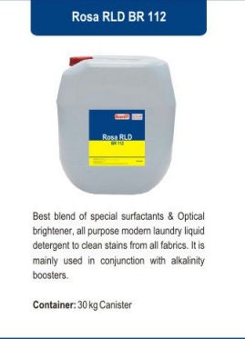
Rosa RLD BR 112
Best blend of special surfactants & Optical brightener, all
purpose modern laundry liquid detergent to clean stains from all
fabrics.
It is mainly used in conjunction with alkalinity boosters.
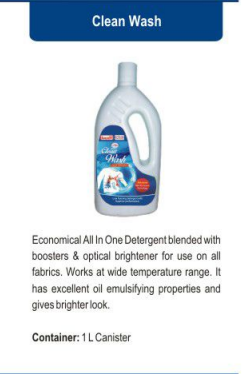
Clean Wash
Economical All In One Detergent blended with
boosters & optical brightener for use on all fabrics.
Works at wide temperature range. It has excellent oil emulsifying
properties
and gives brighter look.
laundry →
powder detergent →
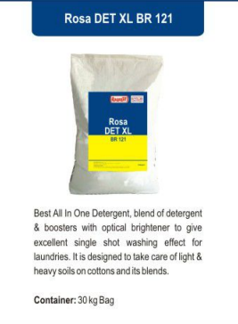
Rosa DET XL BR 121
Best All In One Detergent, blend of detergent & boosters
with optical brightener to give excellent single shot washing
effect
for laundries. It is designed to take care of light &
heavy soils on cottons and its blends.
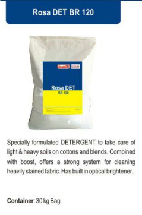
Rosa DET BR 120
Specially formulated DETERGENT to take care of light &
heavy soils on cottons and blends. Combined with boost, offers a
strong
system for cleaning heavily stained fabric.
Has built in optical brightener.
laundry →
emulsifier →
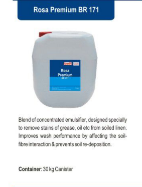
Rosa Premium BR 171
Blend of concentrated emulsifier, designed specially to,
remove stains of grease, oil etc from soiled linen.
Improves wash performance by affecting the soil- fibre
interaction
& prevents soil re-deposition.
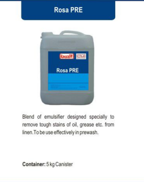
Rosa PRE
Blend of emulsifier designed specially to
remove tough stains of oil, grease etc. from linen.
To be used effectively in prewash.
laundry →
pH booster →
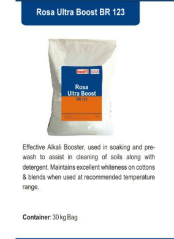
Rosa Ultra Boost BR 123
Effective Alkali Booster, used in soaking and pre-wash
to assist in cleaning of soils along with detergent.
Maintains excellent whiteness on cottons & blends
when used at recommended temperature range.
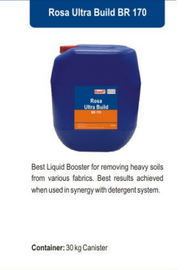
Rosa Ultra Build BR 170
Best Liquid Booster for removing heavy soils from various
fabrics.
Best results achieved when used in synergy with detergent system.
laundry →
fabric softener →
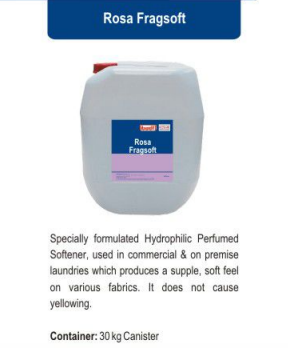
Rosa Fragsoft
Specially formulated Hydrophilic Perfumed Softener,
used in commercial & on premise laundries which produces a
supple,
soft feel on various fabrics. It does not cause yellowing.
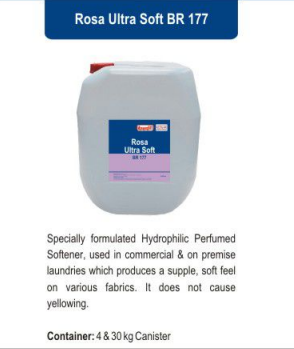
Rosa Ultra Soft BR 177
Specially formulated Hydrophilic Perfumed Softener,
used in commercial & on premise laundries which produces a
supple,
soft feel on various fabrics. It does not cause yellowing.
laundry →
neutralizer →
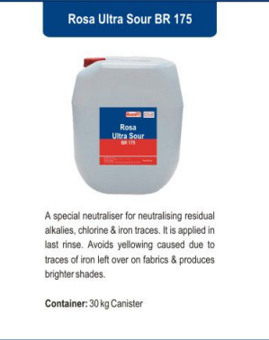
Rosa Ultra Sour BR 175
A special neutraliser for neutralising residual alkalies,
chlorine & iron traces. It is applied in last rinse. Avoids
yellowing caused
due to traces of iron left over on fabrics &
produces brighter shades.
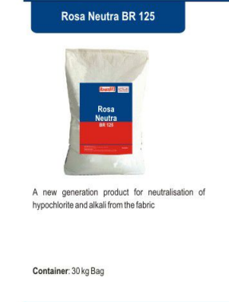
Rosa Neutra BR 125
A new generation product for neutralisation
of hypochlorite and alkali from the fabric.
laundry →
tunnel washer →
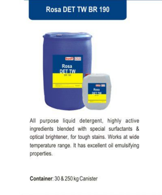
Rosa DET TW BR 190
All purpose liquid detergent, highly active ingredients
blended
with special surfactants & optical brightener, for tough
stains.
Works at wide temperature range. It has excellent
oil emulsifying properties.
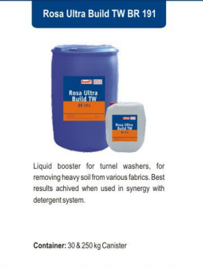
Rosa Ultra Build TW BR 191
Liquid booster for turnel washers, for removing heavy soil
from
various fabrics. Best results achived when used in
synergy with detergent system.
laundry →
fabric stiffner →
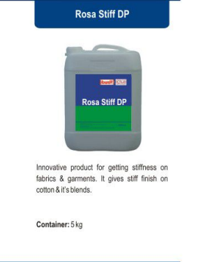
Rosa Stiff DP
Innovative product for getting stiffness on fabrics &
garments.
It gives stiff finish on cottom & it's blends.
laundry
stain remover
also available